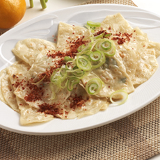

납작만두는 무미에 가까운 듯한 맛이 특징이다. 얇은 만두피에 당면을 넣고 반달모양으로 빚어 물에 한번 삶은 다음 구워서 간장을 술술 뿌려 먹는 납작만두는 대구에만 있는 것으로, 요즘에는 떡볶이나 매운 야채를 섞어 매콤하게 즐기기도 하는 별미음식이다. 기존 중국만두의 느끼한 맛을 제거하기 위해 60년대 초 식물성 만두소를 넣어 만들어진 신개념 만두로써 대구에서 처음 선보였는데, 당면, 부추, 당근, 양배추, 파 등의 만두소를 넣는 듯 마는 듯 사용하는 것이 기존 만두와 다른 점이다.
[식당 목록]
[납작만두 레시피]